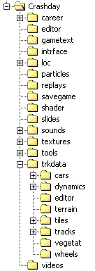

Crashday
directory tree
This is a short overview on all the modding-relevant folders.
|
editor |
contains all 3d model data, e.g.: track pieces models, wheels, backgrounds etc. |
|
sounds |
contains the game's audio files and music, placed into subfolders by category |
|
textures |
global folder for texture data (see Textures and shaders) |
|
tools |
this folder contains this SDK with all tools. It does usually not exist but will be created by installing the SDK |
|
trkdata |
contains a number of sub folders for different purposes (cars, tiles, tracks, vegetation, wheels, etc.) |
|
trkdata\cars |
contains a number of sub folder whereas each folder does represent one installed car (see Technical realization of cars) |
|
trkdata\tiles |
contains definition files for track pieces (tiles) containing information such as tile dimensions, vegetation, AI helpers and links to the reference 3d models |
|
trkdata\vegetat |
contains definition files for different vegetation types holding parameters like dimensions or reference 3d-model |
|
trkdata\wheels |
contains definition files for all non-default wheels holding parameters like dimensions or reference 3d-model (see Custom wheels) |